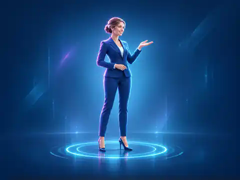

Terminy i powiadomienia
Przypomnienia o rozmowach, kolejnych etapach i brakujących elementach oceny.
ALTIMA AI VISION to wirtualna asystentka AI, która wyjaśnia procedury, wspiera ocenę okresową i rozwój zawodowy. Głos i proste wskazówki zamiast kolejnego skomplikowanego interfejsu.

Pracownik opisuje osiągnięcia, przełożony przygotowuje ocenę, a kadry nadzorują formalności. ALTIMA prowadzi rozmowę, podpowiada kolejne kroki i ogranicza konieczność przeszukiwania instrukcji.

Wyjaśnia kryteria, pomaga opisać osiągnięcia i przygotować rozmowę.
PRZEŁOŻONYPomaga dobrać arkusz A/B/C, kryteria, zebrać obserwacje i przygotować konstruktywną rozmowę oceniającą.

Wspiera kontrolę terminów, dokumentacji i sytuacji takich jak zmiana przełożonego lub długotrwała nieobecność.
ALTIMA ma prowadzić przez rzeczywisty proces oceny okresowej. Technologia upraszcza działania, lecz nie zastępuje oceniającego i nie podejmuje decyzji kadrowych.
ALTIMA pomaga zrozumieć procedurę i przejść przez nią w naturalnej rozmowie.
Kliknij wybraną ikonę, aby otworzyć odpowiedni etap w demonstracji ALTIMA.
Porozmawiaj z ALTIMA
Obecna strona jest prototypem demonstracyjnym. Pełne arkusze, kontrola uprawnień i integracje urzędowe wymagają dalszej implementacji i walidacji prawnej.
ALTIMA ma ograniczać powtarzalną pracę administracyjną w małych i dużych urzędach. Najważniejsze funkcje przewidziane w docelowym rozwiązaniu:
Przypomnienia o rozmowach, kolejnych etapach i brakujących elementach oceny.
Wybór arkusza A/B/C, edycja pól oraz przygotowanie pliku do eksportu i wydruku.
Uporządkowanie informacji o pracy podczas okresu oceny, zasadniczo 24 miesięcy.
Uwzględnianie zmiany przełożonego, zakresu zadań lub długiej nieobecności.
Rozwiązanie rozwija koncepcję z prezentacji Canva: AI prowadzi użytkownika przez procedury, a nie odwrotnie.
Wyjaśnia zasady, wspiera przygotowanie do rozmowy oceniającej i pomaga opisać osiągnięcia bez zagłębiania się w formularze.
Porządkuje obserwacje, proponuje pytania, pomaga uzasadnić ocenę i wypracować plan rozwoju zawodowego.
W przyszłości ALTIMA będzie mogła wskazywać kolejne działania bezpośrednio w polu widzenia, po wyrażeniu zgody na dostęp do obrazu.
Docelowo: arkusze A/B/C, kryteria, obserwacje, terminy i projekt oceny do zatwierdzenia przez człowieka.
Docelowo pracownik, przełożony i kadry widzą wyłącznie dane związane ze swoją rolą.
Projektowane mechanizmy ochrony danych, anonimizacji i zgodności z przepisami.
ALTIMA przygotowuje podpowiedzi i projekt dokumentu. Ocenę sporządza i zatwierdza uprawniona osoba.
Obecny prototyp nie jest podłączony do rzeczywistych rejestrów kadrowych. Przed wdrożeniem wymagane są konfiguracja, kontrola dostępu, testy bezpieczeństwa i weryfikacja zgodności prawnej.
W tej sekcji wykorzystana jest ta sama asystentka, którą pokazaliśmy na slajdach. Przeciągnij myszą albo użyj suwaka, aby zobaczyć różne ujęcia postaci, w tym widok z tyłu. To wielokadrowy podgląd 360°, a nie pełny model 3D.

Sprawdź rozmowę z wirtualną asystentką, wybór przykładowego arkusza A/B/C, maksymalnie trzech kryteriów i wygenerowanie demonstracyjnego podsumowania.

Scenariusz edukacyjny na fikcyjnych danych — nie jest urzędowym formularzem A/B/C.
Wybierz arkusz, etap oraz kryteria. Uzupełnij obserwacje i kliknij „Utwórz projekt”. To demonstracja, nie oficjalny formularz. Końcową ocenę sporządza człowiek.
Z tego serwisu możesz przejść bezpośrednio do projektu sportowego ALTIMA ML VISION. Oba projekty pozostają osobne, ale są częścią jednej linii rozwoju AI‑asystentów.
Otwórz ALTIMA ML VISION ↗